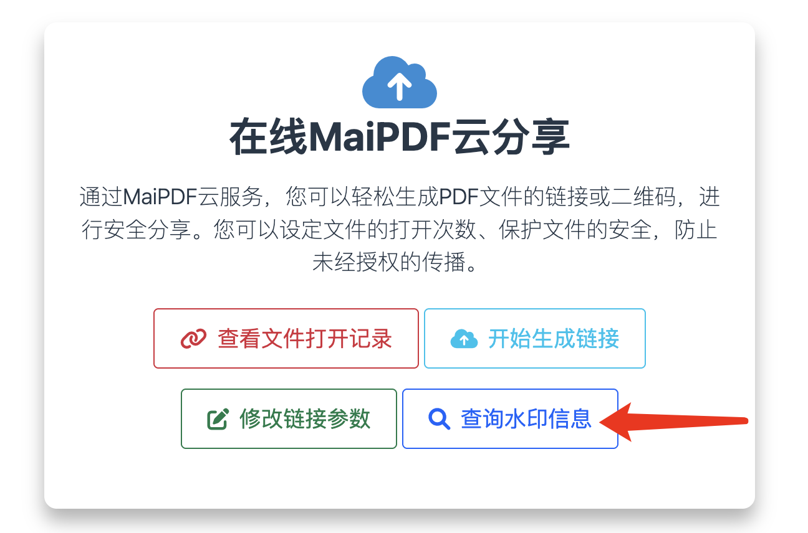

PDF竟然会泄露你的秘密？
🚨 震惊真相
每当你打开或下载一个PDF文件时，你可能正在无意中向文档创建者暴露大量个人信息：你的IP地址、精确位置、设备详情、阅读习惯，甚至你的身份信息都可能被精准追踪。这不是科幻小说，而是正在发生的现实。
⚠️ 隐私警告： 本文揭示追踪方法仅供教育和提高安全意识之用。在实施任何追踪技术时，请始终遵守隐私法律并获得适当授权。
🔍 打开PDF时会暴露什么信息？
📊 你的数字指纹被完全暴露
- 精确IP地址 - 你的确切网络位置
- 地理位置 - 城市、地区、国家数据
- 设备信息 - 操作系统、浏览器、屏幕分辨率
- 网络详情 - ISP、连接类型、代理使用情况
- 时间戳数据 - 访问的准确时间和日期
- 阅读行为 - 停留时间、查看页面、交互模式
- 来源信息 - 你是如何找到这个文档的

🕵️ 隐藏的追踪机制揭秘
🎭 方法一：隐形网络信标
现代PDF追踪系统会嵌入肉眼不可见的1x1像素图片，当你打开文档时这些图片会从远程服务器加载。这些"网络信标"会立即将你的信息传输到追踪数据库。
工作原理：
- PDF包含隐藏的图像元素
- 你的PDF阅读器尝试加载这些图片
- 请求连同你的IP一起发送到追踪服务器
- 服务器记录你的所有信息
🔗 方法二：智能链接追踪
你得到的不是直接的PDF文件，而是看似正常但实际通过复杂追踪系统路由的链接。

追踪流程：
- 点击"PDF下载"链接
- 通过追踪基础设施重定向
- 你的数据在毫秒内被收集
- 最终提供实际的PDF文件
🌊 方法三：动态水印追踪
每个PDF版本都包含独特的、个性化的元素来专门识别你的身份。

个性化元素：
- 你的邮箱地址被隐形嵌入
- 与你身份绑定的唯一文档ID
- 为你生成链接的时间戳
- 文档元数据中的隐藏追踪码
😱 真实暴露案例
🎯 案例一：求职陷阱
小王从某公司网站下载了求职申请表PDF。她不知道的是，公司追踪到了：
- 她的家庭住址（通过IP地理定位）
- 她在凌晨2点查看（表明求职迫切）
- 她打开了7次（显示高度兴趣）
- 她的设备暗示失业状态（旧笔记本电脑，白天访问）
- 她的ISP表明来自低收入社区
结果： 公司利用这些情报提供了低于市场价的薪资，因为知道她的迫切程度。
🏢 案例二：商业间谍活动
某科技创业公司将"机密"商业计划书以PDF形式分享给潜在投资者。他们发现：
- 竞争对手正在访问该文档
- 一个竞争对手查看了23次
- 访问来自竞争对手办公室的IP
- 查看模式揭示了他们最感兴趣的幻灯片
结果： 创业公司识别了泄露源头并调整了策略。
🛠️ 专业追踪技术实施
🚀 设置高级PDF追踪
对于合法的商业目的，专业人士这样实施PDF追踪：

实施步骤：
- 选择平台： 选择专业的PDF追踪服务
- 上传文档： 将PDF添加到追踪系统
- 配置设置： 设置追踪参数和隐私级别
- 生成链接： 创建可追踪的URL用于分发
- 监控分析： 观察实时访问数据
⚙️ 高级配置选项

追踪自定义：
- 隐形模式： 完全不可见的追踪
- 地理过滤： 阻止或允许特定地区
- 访问控制： 需要邮箱验证
- 时间限制： 设置文档过期日期
- 下载限制： 仅查看或限制下载
📊 可以收集的情报信息
🧠 行为情报分析
高级PDF追踪可以揭示读者的心理洞察：
- 阅读速度： 他们处理信息的速度
- 注意力模式： 哪些部分获得最多关注
- 决策制定： 查看到行动之间的时间
- 兴趣程度： 重复访问和持续时间
- 分享行为： 是否转发给他人
🌍 地理和网络情报
- 精确位置： 通常精确到城市街区级别
- 网络分析： 企业vs住宅vs移动网络
- VPN检测： 识别注重隐私的用户
- 代理分析： 发现隐藏身份的尝试
- ISP分析： 经济和人口统计指标
🛡️ 如何保护自己
🔒 隐私保护策略
- 使用VPN服务： 隐藏你的真实IP地址和位置
- 禁用图片加载： 配置PDF阅读器阻止外部图片
- 使用代理服务器： 通过匿名代理路由流量
- 离线阅读： 下载后在飞行模式下阅读
- 虚拟机： 为可疑文档使用隔离环境
- Tor浏览器： 查看敏感文档的终极匿名性
🔍 检测方法
如何发现PDF可能在追踪你：
- 检查异常的URL重定向
- 在PDF打开过程中监控网络流量
- 检查PDF元数据中的追踪码
- 寻找文档中的可疑图像元素
- 使用PDF安全扫描工具
🎯 为什么企业需要这些技术
💼 合法的商业应用
- 销售情报： 识别热门潜在客户及其兴趣
- 内容优化： 了解哪些部分最吸引读者
- 安全审计： 监控敏感文档访问
- 市场研究： 了解受众人口统计和行为
- 竞争分析： 追踪竞争对手对你内容的兴趣
⚖️ 法律与道德考量
🚨 法律边界
- GDPR合规： 必须告知欧盟用户追踪行为
- 国内法规： 遵守《网络安全法》《个人信息保护法》
- 行业法规： 医疗、金融有更严格的规定
- 同意要求： 何时需要明确的法律许可
- 数据保留限制： 追踪数据可以存储多长时间
✅ 道德最佳实践
- 在隐私政策中明确披露追踪行为
- 为用户提供退出机制
- 将数据收集限制在业务必需范围
- 用加密保护所有收集的数据
- 定期审计追踪实践
- 尊重用户隐私偏好
🔮 PDF情报的未来
🚀 新兴技术
- AI行为分析： 机器学习预测用户意图
- 生物特征集成： 眼球追踪和阅读模式分析
- 区块链验证： 不可篡改的访问记录
- 实时情感分析： 情绪反应检测
- 跨平台追踪： 在所有设备上跟踪用户
💡 关键要点
🎯 你需要记住的
- 每个PDF都可能追踪你 - 假设所有文档都可能包含追踪
- 你的隐私很宝贵 - 采取措施保护你的数字足迹
- 商业利益是真实的 - 合法追踪提供有价值的洞察
- 法律合规很重要 - 始终遵循适用的隐私法律
- 技术在不断发展 - 追踪方法变得更加复杂
🔥 底线
PDF追踪比大多数人意识到的更加普遍和复杂。无论你是想要实施追踪的企业，还是想要保护隐私的个人，了解这些技术在当今数字环境中都至关重要。
知识就是力量 - 请明智和负责任地使用它！